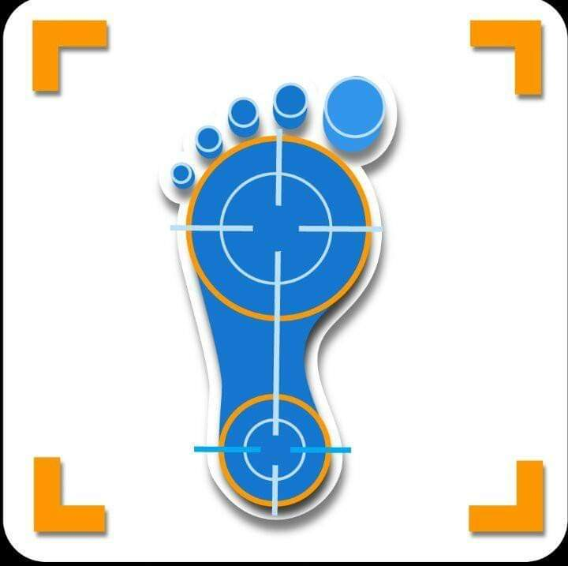

Podología San Juan

|  |
Podología San Juan
|
|
| Escuela podológica de México. Técnico Profesional en Podología | 2017 |
| Diplomado, diabetes en la podología AMQUIPAC con aval de Asociación Mexicana de Diabetes | 2012 |
| Diplomado de Podología AMQUIPAC (Asociación Mexicana de Quiropedistas y Podiatras AC.) | 2007 |
| Experiencia | ⭐⭐⭐⭐⭐ | Atención personalizada | ⭐⭐⭐⭐⭐ |
| Cordialidad | ⭐⭐⭐⭐⭐ | Ambiente amigable | ⭐⭐⭐⭐⭐ |
| Precios competitivos | ⭐⭐⭐⭐⭐ | Personal capacitado | ⭐⭐⭐⭐⭐ |
| Equipo de vanguardia | ⭐⭐⭐⭐⭐ | Conocimiento de casos |
⭐⭐⭐⭐⭐ |
Recomendamos que los profesionales de la salud que manejan personas con diabetes deben:
55 1346 2364
55 2755 6686
Calzada San Juan de Aragón 426 Constitución de la República 07469 Ciudad de México, México
podologiasanjuan@gmail.com
lun.: 11:00–20:00
mar.: 11:00–20:00
mié.: 11:00–20:00
jue.: 11:00–20:00
vie.: 11:00–20:00
sáb.: 8:00–18:00
dom.: 8:00–15:00